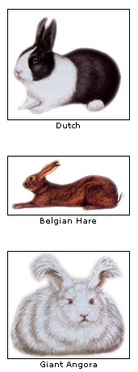
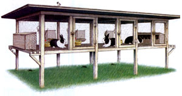

The Many Rewards Of Rabbits
June/July 2003
By Nancy Smith and Heidi Hunt
Illustrations by Tom Griffin
If rabbits turn your head-whether your fancy runs to whoppers like the gentle Flemish Giants, to gorgeous and easygoing Angoras or to the soft and cuddly Mini Rex-you'll find plenty of these critters for sale, at reasonable prices, all across the country. And if you decide to go a-rabbiting, keeping as few as two or three bunnies lets you tap some of the "green" contributions these versatile little animals can make to your homestead.
Domestic rabbits have been contributing companionship, food, fur and other products to their American keepers-urban and rural-since about 1900, when they first were imported from Europe. Today, they are raised as pets, for meat, pelts and wool, and for medical research.
Whatever their purposes, all rabbits produce a high-powered, relatively weed-seed-free manure that can be used to enrich garden plots and raise earthworms, which also do their part to improve garden soil.
If you're looking for yet another use for rabbits that doesn't involve harvesting them for meat or pelts, some breeds produce a luxurious wool that can be sheered from their coats, spun and woven into an exotic yarn.
POPULAR PETS
From childhood, many of us have known bunnies primarily for their sterling qualities as pets-cuddly, quiet and inquisitive. Glen Carr, executive secretary of the American Rabbit Breeders Association (ARBA), says his association recognizes 45 distinct breeds. The most popular for pet purposes, he says, are the Dutch, Netherland Dwarf, Mini Rex, Jersey Wooly (an Angora) and Mini-Lop; of those, the Mini Rex holds the top spot.
Gretchen Shoup of Radical Rex Rabbitry in Custer, Michigan, says she thinks of her Mini Rex as "velveteen" rabbits. "Their fur feels just like velvet fabric," she says. "The guard hairs keep the fur upright, which creates a very dense, springy, soft, slinky feeling when the fur is compressed."
ARBA standards recognize a number of colors for the Mini Rex, including black, blue, castor, chinchilla, chocolate, Himalayan, lynx, opal, red, seal, tortoise, white, lilac and a broken pattern, and breeders are trying continually to develop new variations. Maximum show weight for this breed's senior does, which are female rabbits, is a diminutive 4 1/2 pounds; for bucks, or males, it is just 4 1/4 pounds.
Shoup, a junior in art education at Siena Heights University in Adrian, Michigan, and her younger sister, Rachel, 17, keep about 40 rabbits. They followed their brother into the 4-H rabbit project; he kept mixed breeds while the girls kept standard Rex, but Gretchen switched to Minis in 2000 and hasn't looked back. Most Mini Rex also have really good personalities, she says, explaining why she focuses on selling her rabbits as 4-H projects and pets. "They're too little to butcher," she says, "and they're easier for a little kid to carry around." Her own 4-year-old nephew, Preston, regularly helps with the chores at Radical Rex.
Karen Heintz, secretary of the National Mini Rex Rabbit Club, reports more Mini Rex were shown last year in competitions and more are owned by youths than any other breed of rabbit. She says they are a cross between the standard Rex and the Netherland Dwarf that resulted in a dwarf rabbit with the gentle personality of the Rex and a Rex coat, which she described as "carpet-like."
Heintz began raising and showing rabbits after her own daughter enrolled in the 4-H rabbit project in 1988. Eventually, her daughter grew up-and Heintz became a licensed ARBA judge. She was the first American invited to judge a Mini Rex rabbit competition in Japan, and now, she says, she flies somewhere in the world almost every weekend to judge a rabbit show.
Back home on her Pipestone, Minnesota, farm, all the manure from Heintz' rabbitry goes on her garden. "I swear by it," she says.
Shoup's family tends an 80-year-old, 20,000-square-foot vegetable and flower garden established by her greatgrandparents on the family's Michigan farm, and every bit of manure the rabbits produce goes on that plot, too.
Frank Zaloudek of Horn Rapids Rabbitry in West Richland, Washington, keeps Mini Rex, Belgian Hares and Flemish Giants-but he's fondest of the latter two. For Zaloudek, a retired research
scientist who took up rabbit keeping as a hobby 15 years ago, it was love at first sight with the gentle Flemish Giants, which often weigh in at 20 or more pounds. "I walked into the local Red Mountain Feed Store to buy cattle feed," he re calls, "and they had two Flemish Giant rabbits for sale. I thought they were so extraordinary I bought them on the spot. I love those guys."
Belgian Hares, which date to the early 1700s in Europe, are a very historic breed in the United States, having launched domestic rabbit keeping here with their arrival in 1888. The breed's early promoters exhibited the rabbits at small stock shows across the country, successfully popularizing them. For a time, large numbers were imported at fabulous prices-as much as $1,000 each at a time when laborers were paid 10 cents an hour-creating what now is called the "Belgian Hare boom."
Today, Zaloudek, who is secretary-treasurer of the Belgian Hare Breeders Club, says only about 400 of the animals exist in the United States-but their popularity is on the rise again, especially along the East Coast.
These rabbits are tricky to breed, he says, but the challenge of such a difficult task and the beauty and grace of the animals, which will "prance in their cages in a fashion that can only be described as an animal ballet-not a flat-footed rabbit hop," appeal to fanciers. With handling, he says, they make good pets, too.
MEAT AND MANURE
Backyard rabbitries also may provide meat for a family. Rabbit breeds developed specifically for meat include Giant Chinchilla, Californian and the New Zealand.
Zaloudek regularly culls from his Mini Rex, Belgian Hare and Flemish Giant herds, too. He and his wife butcher the animals themselves and take them to a local butcher, who mixes the rabbit meat with herbs and pork (for fat) to make a tasty rabbit sausage the couple enjoys. Zaloudek says his practical motto is "Show the best and eat the rest."
If there's a rabbit around your house (or yard), it will reliably produce about a pound of dry manure a week, or 50 pounds in a year. With minimal effort, the rabbit's output can be turned into garden "black gold." George Dickerson, extension horticulture specialist in New Mexico, describes rabbit manure as a "high quality" soil conditioner that is often low in weed seeds because rabbits usually are fed prepared foods. The average nutrient content for dry manure is rated at 2.4 percent nitrogen (N), 1.4 percent phosphorus (P) and 0.6 percent potassium (K). Fresh, it is higher in nitrogen than chicken, cow, horse, pig, sheep or goat manures; dry, it remains higher than cow, horse and goat manures.
Less likely to burn plants than some other manures, rabbit manure is particularly well-suited to plants that require heavy feeding. Davis' husband, Bill, swears by it for azaleas; others favor it for roses.
Dickerson suggests incorporating the manure directly into the soil in the fall or combining it first with other organic materials in a compost pile. A minimum of three weeks of composting is recommended. Spread the composted material on the produce garden or top-dress ornamental plants with fresh manure.
Dickerson also recommends starting a worm farm under the rabbit cages, using red wigglers (Eisenia fetida) from bait stores. "Then," he says, "you will have a source of good manure, worm castings and a source of compost worms for other compost sites in your landscape." (In cold winters, red wigglers may die out; just replace them in the spring.)
Raising earthworms in beds underneath the rabbit cages also helps ensure odor control in the rabbitry and regular visits from fishing friends, who'll love using those plump, juicy worms for bait.
SILKY, WAVY WOOL
Seven years ago, spinner and weaver Linda Davis of Richlands, North Carolina, saw her chance at a barnful of Angora wool "on the hoof" when her son Sean first entered 4-H. His club's focus was on animal science, and he wanted to enroll in the rabbit project, too. His mother reasoned that he might as well buy Angoras so they'd have wool as well as rabbits. "It was a very good choice," she says today. "Once we got the rabbits home, I fell in love with them. They're so sweet and loveable, and so much fun to have around the house. I just enjoy their companionship." And Sean, now 14, has done well with his rabbits nationally in 4-H, earning a spot in the National 4-H Congress, and winning top prizes in national rabbit breed competitions, too. "You have to be dedicated," Sean says of taking on the responsibility of caring for rabbits-whether it's a single animal or a barnful. "It's a lot of work, but in the long run, it's worth it," he says.
Susan Rutz of Topeka, Kansas, agrees. For many years, she and her husband kept rabbits for their foster children to care for while living in their home. "When new foster children arrived, we showed them their rooms and the bathroom, and then led them straight to the back yard and the rabbits. Each child was assigned a rabbit to care for and given instructions for the daily cleaning of the cage and the animal's feeding routine."
One of the foster children in particular excelled with the rabbits, she says. "He would spend hours brushing the rabbits and caring for them, the entire time talking to them about the personal details of his life that he was not comfortable sharing with anyone else. He became the neighborhood expert in the proper care of rabbits, and he found his permanent home with us."
Zaloudek also has seen a rabbit's emotional healing power firsthand. He and his wife use their Flemish Giants and Mini Rex for pet therapy at a local nursing home. "My wife put a rabbit on the chest of a person in a coma and thought to be a vegetable. She took the person's hand and placed it on the rabbit, and he smiled. That was the most heart-warming thing we have ever seen."
Whether a pet-therapy animal or just a pet, beloved bunnies often are kept indoors like a house cat, trained to use a litter box, and spayed or neutered according to their sex. Davis says they make wonderful house pets but need a comfortable and secure cage or hutch to stay in when no one is home - to protect them from themselves. Bunnies enjoy chewing on a variety of things, and electrical cords present a particular hazard.
"Rabbits are cute, but they need responsible care," Davis says. "Be prepared to give a lot of love and a lot of care."
Resources
For more information on buying and raising rabbits, contact the American Rabbit Breeders Association, Inc.; P.O. Box 426; Bloomington, IL 61702; (309) 664-7500; www.arba.net
To get a close-up look at a lot of rabbits, attend the 80th ARBA National Convention and Show, " Hop to the Heartland ," November 2 to 6, 2003, in Wichita, Kansas. For more information on this event, contact the ARBA.
Related Article:
Practice Good Rabbit Habits
Mother Earth News
|
Top: The Mini Rex currently is the most popular rabbit for showing and for children. Middle: The New Zealand, which also comes in black and red, exemplifies the rabbit's meat-producing qualities. Bottom: Flemish Grants are one of the oldest specialty breeds |
 If you keep your rabbits outdoors, locate their hutches in a protected site. The hutch should have a roof with a generous overhang to help protect the animals from inclement weather and adequate flooring to protect their feet. |
 |
|
 |
|
|